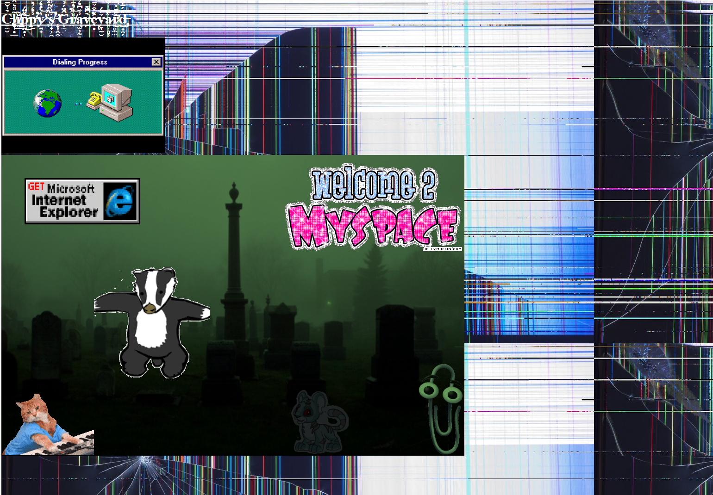

<html class ="projecttwo"></html>

<link rel="stylesheet" href="website.css">
<h1><b>p5.js Project</b></h1>
<p><b>About the Project:</b>For our second project done in p5.js, I decided to make an "internet graveyard" that I have titled "Clippy's Graveyard". The overall concept involves old, irrelevant, pieces of the internet that have since been forgotten. They have been left in this rather spooky graveyard to live out the rest of their lives in irrelevancy. with this piece, I wanted to give the viewer a sense of nostalgia, but also make that nostalgia feel more sad than usual. Through the glitched aesthetic and personification of these aspects of the internet, I wanted to make the viewer feel sympathy through the narrative I created for these things that would otherwise be lost to time.  </p>


<p><b>Website link:</b>https://editor.p5js.org/heidthom45/full/yxvTMxjkX</p>

<p><b>Source Images and Audio:</b>https://drive.google.com/drive/folders/1v-oFozBP1_PfnKSimqbeCvCETzkICeGt?usp=share_link</p>

<div class="graveim">
    
    </div>  
    


<div class="neovid">
    <p><b>Demonstration:</b>
    <video width="600" height="340"  controls>
        <source src="proj2vid.mp4" type="video/mp4">
        <source src="movie.ogg" type="video/ogg">
      Your browser does not support the video tag.
      </video>
    </div>